Modelos de Suavizamiento
Vamos a alimentar nuestra caja de herramientas con algunos modelos muy sencillos.
Vamos a iniciar con los:
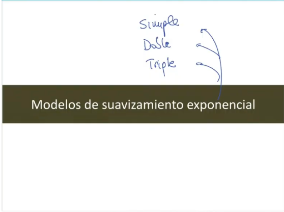
Este video se va a encargar de explicar la teoria y el transfondo detras de todos estos modelos y apartir de ello, sería la aplicación, el como se hace en R.
Y ajustar algunas cosas de Métodología y nos explicara cosas del proyecto
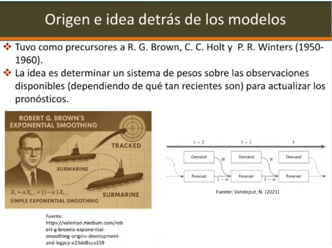
El origen de esto fue entre lo que fue durante y finales de la 2da guerra mundial.
Donde una serie de matemáticos empezaron a proponer métodos, en este caso para predecir la posicion de un submarino, dado de información cuando habia sido observado.
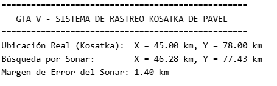
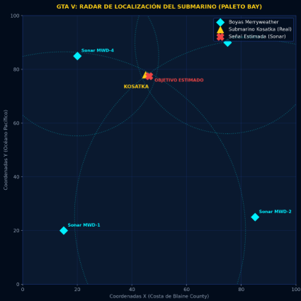
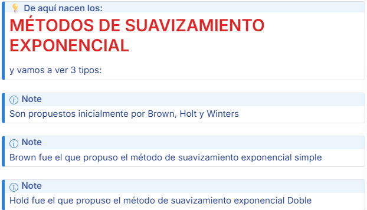
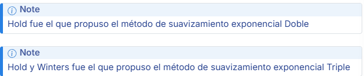
Pero la idea es como pensar en un submarino o algo que esta debajo del agua y vimos hace 5 minutos que estaba en determinada posición.
La idea es como puedo usar esa información / Y otra información que yo voy observando (De como se va acercando a mi, para predecir
Escenario en Series de Tiempo
Vamos a traer 2 fuentes de información:
1) Qué es el Histórico de los Datos
2) El otro son los datos nuevos
Y vamos a tratar de combinarlos para dar nuevos prónosticos.
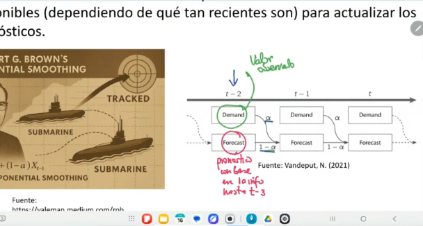
En el instante t-2, hay algo que viene desde antes que viene guardado la informacipon de lo que se sabia de antes (Forecast)
Forecast : Pronostico con base en la info t-3 (Luego observo algo)
Demand: Este valor observado me ayuda a corregir lo que yo llevo y a convinaro con unos pesos, para saber lo qeu será el pronóstico de mañana o del instante siguiente.
Y nuevamente convino Lo Observado + Lo Pronosticado de tal manera que vamos obteniendo información en una ventana e irla actualizando
(Ese es el principio del suavizamiento exponencial Simple)
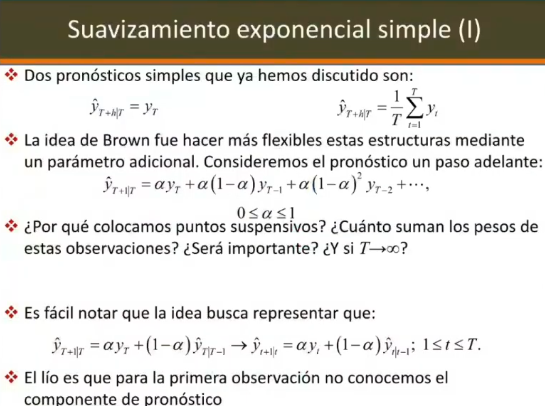
La clase pasada hablábamos de los modelos base o los modelos Benchmark y vimos ( o les mencioné muy rápidamente que cuando uno no tiene mucha información uno suele hacer 2 cosas)
El pronóstico de ingenuidad (o Persistencia) consiste en coger el último valor observado dentro de la ventana temporal y decir que ese va a ser mi pronóstico.
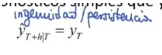
O un pronóstico de la media, por ejemplo. Yo también podría decir, voy a promediar, toda la muestra (Pero podria ser una ventana más corta)
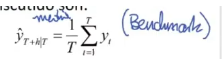
Y esos son dos pronósticos base con lo cual nosotros comparamos
Método exponencial Simple
Vamos a ver que el métodos exp onencial simple (La idea de Brown) fue de alguna manera extender y hacer más general estos dos comportamientos de dos prónosticos simples (Osea el de ingenuidad y el de media.)
\(\alpha\)
Entonces lo que el hizo (Brown) fue introducir un parámetro que esta entre [0,1] y con ese alfa (\(\alpha\)) vamos a ver qué tanto peso le damos a la información dependiendo de que tan reciente sea.
Entonces, a la última observación, por ejemplo, estoy tratando de predecir el instante T + 1, ¿cierto?
Entonces, a la observación inmediatamente anterior le doy un peso de alfa y luego sigo distribuyendo los pesos. Miren que alfa aparecen todos.
Sí, ya vamos a ver por qué. Sí. Eh, yo no sé si ustedes se acuerdan de la distribución geométrica.
Distribución Geométrica
Si ustedes tienen una variable aleatoria, por ejemplo,
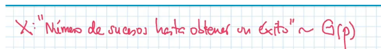
número de sucesos, número de lanzamientos de una moneda o número de lo general, número de sucesos hasta obtener un éxito, ¿cierto? Ustedes recordarán en probabilidad que generalmente pues si había unas condiciones adicionales, uno podía modelar esta variable aleatoria como una variable aleatoria geométrica de parámetro P y su función de masa de probabilidad era
Función de Masa de la Distribución Geométrica (Caso Discreto)
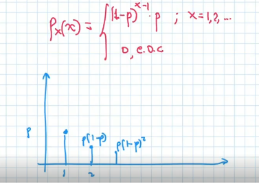
se bueno, eh, digámoslo así 1 - p, que era la probabilidad de fracaso x a la x - 1 * p, si x era igual a 1, 2, etcétera, y 0 en otro caso. Es decir, si ustedes graficaban esta función de de masa de probabilidad, acá en uno tenía P, ¿cierto? En dos uno tenía P * 1 - P, ¿cierto? Aquí teníamos P * 1 - P y así iba bajando P * 1 - P², ¿sí? al cuadrado y excesivamente iba bajando y por eso pues esta era geométrica, pero era el equivalente de la exponencial en el caso continuo.
Sí, era la que también tenía pérdida de memoria y ustedes se acordarán de varias. Aquí estamos pintando la función de masa y aquí estamos pintando el valor de x de la variable, ¿no? Entonces, miren que los pesos que
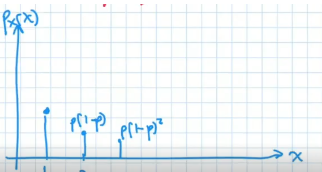
Entonces, miren que los pesos que nosotros estamos obteniendo, voy a cambiarles el color para que se vean mejor. Los pesos que estamos obteniendo se parecen mucho, o sea, en realidad guardan la misma estructura.
Entonces, el nombre exponencial, bueno, y obviamente esto continuaba, ¿no? Íbamos en tres, pero pues eso continuaba.
O sea, el soporte de esta variable (\(\Omega_X\)) aleatoria eran, si ustedes recuerdan, pues para recordar, soporte de esta variable aleatoria eran los naturales, bueno, e los elementos 1, 2, 3 y el infinito, ¿no?
\[\Omega_X = \{1, 2, 3\} \cup \{\infty\}\]
Porque podía llegar a suceder que nunca se diera el éxito, o sea, era posible más no muy probable.
“Y por ende por esa razón se le dio el nombre de distribución o suavisamiento exponencial”
Pues heredando, sabiendo que la geométrica es la versión discreta de la distribución exponencial y ambas son las que tienen pérdida de memoria.
Pero bueno, se ve claramente que si alfa está entre 0 y 1, así como lo vimos acá, los pesos van decreciendo.
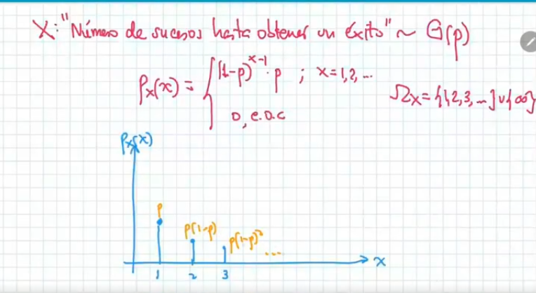
Entonces, estos pesos cada vez, o sea, entre más alejada esté la información, menos peso va a tener en la predicción un paso adelante, ¿cierto?
Y pues bueno, ahí tenemos una manera de explorar eso.
¿Por qué colocamos puntos suspensivos?
Vamos a ver, vamos a tratar de sumar esos pesos a ver cuánto suman. Miren que los pesos de de que teníamos acá, o sea, si tratamos de ver como un sistema de pesos, aquí todo el peso estaba concentrado en la observación y sumaban uno.
Aquí cada observación tenía 1 sobre t y la suma de los pesos de cada observación también nos daba uno, ¿cierto?
O sea, en este caso particular también. Vamos a ver cuánto suman en este caso los pesos.
Vamos a sumar esos pesos que tenemos ahí. Tenemos que sumar:
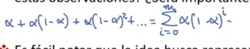
alfa + alfa * 1 - alfa + alfa * 1 - alfa cuad más etcétera. ¿Cierto? Que esto es lo mismo que decir la suma desde igual 1.
Miren ustedes que el el el pronóstico de persistencia en realidad equivaldía a ser alfa igual a 1. Vamos a ver más adelante el pronóstico eh de media a qué equivaldría. ¿Sí? Miren que ahí tenemos los pesos y ahorita vamos a ver por qué colocamos los puntos suspensivos o qué queremos indicar con eso.
Ustedes recordarán que esto es una, o sea, los coeficientes son una progresión geométrica y al ser una progresión geométrica se pueden sumar.
Voy a factorizar el alfa aquí. Eh, bueno, podríamos poner T acá, aunque no quisiera. Bueno, coloquemos M y ahorita miramos a ver porque pregunté qué pasaba si m tendía infinito, o sea, muchos más datos ahí hacia atrás.
Bueno, dejémoslo con T acá. Se, suponiendo que vamos a ir retrocediendo hasta el límite, hasta el primer dato.
Sería desde 0 hasta t de 1 - alfa. Esto es una es lo que da origen luego a una serie geométrica y ustedes recordarán que bueno, como no la estamos todavía llevando a infinito, esta suma, ¿cuánto nos da?
Esta suma nos daba, si ustedes recordarán, 1 - 1 - alfa al siguiente exponente al que al máximo que llegamos acá sobre 1 - 1 - alfa. O sea, esto es lo que nos daba la suma, ¿cierto?
Esto nos va a dar alfa, o sea, si ustedes no me creen, esto nos va a dar alfa. Entonces, este se va a cancelar con este y es como si de alguna manera se nos está dando 1 - 1 - alfa a la t + 1.
O sea, nos falta, no suman uno los pesos a menos de que porque haya un término, o sea, falta adjudicar este peso y ya vamos a ver, falta este peso, ya vamos a ver este peso dónde está porque no suman uno. Pero claro, si t tiende a infinito, si efectivamente esto tiende a uno, obviamente bajo el supuesto de que alfa está entre cer y uno.
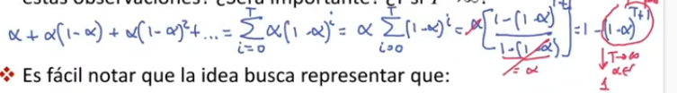
Ustedes recordarán la serie geométrica converge solamente en el abierto, ¿no?
¿cierto? Bueno, pues si ustedes en realidad se ponen a pensar, o sea, si yo me pongo a pensar acá, voy a hacer una lineecita, bueno, esto era como un primer repaso.
Si yo escribo entonces siguiendo esa línea, yo tengo por acá el pronóstico:
de T + 1 dado t era igual a alfa * y sub t + alfa * 1 - alfa y sub t - 1 + alfa * 1 - alfa y sub t - 2. Dejémoslo hasta ahí, ¿cierto? Y yo llego y factorizo eh lo que quiero mostrarles acá. Si factorizo el 1 men alfa de aquí, o sea, esto me queda alfa y aquí factorizo 1 - alfa. 1 - alfa factor de me quedaría alfa y - 1 + alfa * 1 - alfa yt - 2 más es como si este término que yo tuviera aquí está.
Miren que la fórmula empezaba, si estoy prediciendo un paso adelante, empezaba en la última observación con alfa y luego iba la anterior. La anterior aquí es como si estuviera prediciendo y convénzase de eso. Si no me dicen, esto está prediciendo con la información hasta t - 1 a y sub t. O sea, miren que no sé si todos lo alcanzan a ver allí, pero en realidad lo que estamos haciendo es prácticamente lo que decíamos acá.
Tenemos un pronóstico con la información hasta el paso anterior y lo que vamos a hacer es actualizarlo con la información nueva para sacar el nuevo pronóstico de la nueva observación, un paso adelante. O sea, en cierta manera nosotros tenemos que esta ecuación de acá, o sea, que lo todo lo que estamos hablando de la distribución de pesos se podría escribir así.

Ojo que la tarea esa de que nos falta de adjudicar algo de peso, ya ahorita más adelante la vamos a resolver. O sea, no suman uno todavía, pero ya vamos a ver cómo van a sumar uno. Pero es como si estuviéramos haciendo esto, o sea, esto es lo que antes llamábamos el pronóstico en el ejemplo del dibujito anterior. Y esto es lo que en ese dibujito llamaban la demanda, ¿no? Demanda. ¿Y cómo se combinaban lo que teníamos el último pronóstico con lo que nuevamente observamos para obtener un pronóstico en el tiempo futuro.
De hecho, claro, eso no solo lo puedo hacer al final de la muestra, sino lo podría hacer también al interior de la muestra. O sea, esto está indicando que aquí estamos aplicando la misma fórmula al interior de la muestra, o sea, que este modelo es un modelo recursivo. ¿Se acuerdan que la clase pasada veíamos lo del recursivo? O sea, que necesita calcular pronósticos un paso, o sea, ir ir iterando
Eh, entonces este pronóstico es de tipo recursivo y esta fórmula va a ser clave porque nos va a permitir eh hacer eso. El único problema que nosotros tenemos es que, claro, aquí tenemos puntos suspensivos, falta peso por adjudicar y nosotros nunca vamos a tener datos infinitos.
Pues claro, cuando hacemos tender a infinito quiere decir que tenemos datos, muchos datos, pero no en realidad que tenemos datos infinitos, ¿no? Entonces
vamos a solucionar ese problema. Vamos a solucionar ese problema acá. Entonces, bueno, miren una cosa importante. Vamos a suponer entonces claro, en al final de la muestra yo tengo mis daticos, como los hemos dibujado, ¿cierto? Yo tengo mis daticos. Y sub1, Y sub2, Yub 3, Y sub4, hasta Y subt, ¿cierto? Al final de la muestra para predecir a y sub t gorrito + 1 dado t, utilizo todo esto, ¿cierto? Usando la información del pronóstico que se ha venido antes y luego ese a su vez depende del anterior.
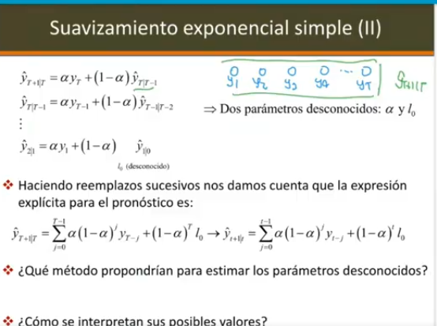
Miren ustedes que se forma una recursión, ¿cierto? En la cual nosotros desconocemos dos parámetros. el alfa, que ya sabemos que la idea es tratar de que los datos lo definan por ahí entre 0 y uno.
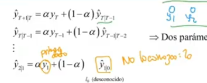
Y lo último que desconoceríamos es, bueno, si mis datos empiezan en y sub 1, si este es mi primer dato, pues en realidad no tendría un histórico.
Este no lo conozco, que lo vamos a llamar L sub0 y va lo vamos a tratar como otro parámetro desconocido. Que faltan dos parámetros.
Subero que haría las veces de la información previa que tendríamos antes de que empiece esta cadena de actualización y alfa que nos dice cuánto cuenta la información previa o cuánto cuenta cuánto cuesta cuánto cuenta o qué contribución tiene la información reciente.
O sea, tenemos dos parámetros desconocidos. Si ustedes resuelven de manera usando el método de recursión van reemplazando eh llegamos a algo parecido a esto, a lo que teníamos por acá, ¿cierto? Pero con una diferencia es que ustedes habiendo dicho esto, que obviamente tenemos que iniciar en un punto y lo que desconocemos en es atrás lo vamos a llamar l sub y lo vamos a coser un parámetro.
Ahí ya completamos nuestra ecuación porque ya no vamos a poner los puntos suspensivos, sino que miren que el peso que de alguna manera nos faltaba.
Bueno, aquí de pronto de pronto me faltó una cosita el hecho de decir que de pronto acá era mejor poner T - 1, ¿cierto? Porque para llegar hasta la observación, entonces aquí nos va a quedar ese exponente de t. Sí, solo una un pequeño ajuste para decir que nuestros datos empiezan es en en uno y no en cero.
Sí, falta ese peso 1 - alfa a la t. Pero miren ustedes que haciendo la recursión acá ya nos damos cuenta que ese peso se lo vamos a adjudicar a L sub0, a la cantidad que desconocemos, ¿cierto? Y así nos funcionaría para pronosticar, ¿cierto? esta ecuación de acá ya no va ya no va a depender de los pronósticos, sino va a depender de los valores observados y pues de los parámetros que desconocemos, alfa y LC.
Y eso también aplica intramuestra, o sea, yo podría recortar esto hasta el punto que yo quiera y empezar a hacerlo pues iterativamente o de manera secuencial entre a lo largo de la muestra, ¿no? La cuestión sería, bueno, sabemos que \(\alpha\) y \(l_o\) son parámetros desconocidos.
¿Cómo es correcto estimar esos parámetros EXANTE?
Quisiera que ustedes, si están viendo este video y lo están viendo con calma, pausen y traten de pensar cómo podríamos estimar alfa y l sub0, que son los parámetros desconeos y tenemos la serie histórica y ya sabemos que los pronósticos, , son exante, eh pero sí vamos a usar toda la información para predecir eh los datos, o sea, para apreciar alfa y L0, ¿qué método propondríamos? ¿Cierto?
Problemas con el Suavizamiento
Desventajas del Modelo de Savizamiento exponencial
No es un método, no podemos dar mínimos cuadrados, no estamos hablando de variables aleatorios, entonces no podríamos dar máxima verosilitud por ahora, ¿cierto?
Y no no no son lineales, o sea, este este esta ecuación no es lineal en los parámetros, no altamente no lineal. Altamente no lineal.
Eso fue la primera dificultad que enfrentó Brown. Entonces Brown no propuso un método de estimación muy robusto, sino que propuso unas reglas como, bueno, calcule unas reglas más que todo Heurístico1.
Como para saber quién es el sub y quienes serian los alfas.
Bueno para tratar de estimar esos datos con base en la información ¿Vale?
Eh, como les decía, ya las interpretacones las tenemos.
Alfa en realidad lo que nos esta disciendo es que entre más grande pesa la información reciente.
Si llegamos al límite de uno, estaríamos eh en el caso del pronóstico de persistencia. O sea, miren que si alfa vale 1, estaríamos en el pronóstico de persistencia.
\(\alpha=1\) Es el pronóstico de Persistencia
\(\alpha=0\) Es el pronóstico de Persistencia
Pero ahora vale la pena interesar, preguntarnos qué pasa si alfa vale cero. Si alfa vale 0, miren que todos estos términos tienen alfa, o sea, todo esto desaparecería y en realidad y este término valdría uno.
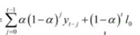
Es decir, que el pronóstico sería L sub0 siempre, o sea, no tendríamos un pronóstico distinto. Este alfa sub es equivalente como a sacar una media estática2 y no cambiarla.
Entonces en ambos casos se tienen como casos límite del suavizamiento exponencial simple.
Pero volviendo al problema de la estimación, eso se puede estimar por mínimos cuadrados, pero el problema es que no son mínimos cuadrados lineales y no es fácil.
\[\hat{\beta} = (X^T X)^{-1} X^T y\]
No hay una fórmula como x traspuesto x a la men, x traspuesto y las derivadas, si ustedes tratan de derivar este problema para encontrar los puntos críticos y los luego los mínimos y máximos, van a llevarse expresiones feas.
- Entonces no hay linealidad, no en los no en los parámetros, por lo menos, que es lo que nos interesaría acá.
- Además de eso, nosotros no podemos permitir que alfa tome un valor cualquiera.
- Ya hemos dicho que alfa tiene que estar entre 0 y 1.
- Máximo aceptamos los extremos porque ya sabemos que representan otros esquemas.
- Entonces, sí hay restricciones, sí, alfa tiene que estar en tercer un Entonces esto complica. Esto hace que el problema
de optimización sea altamente costoso. ¿Sí? Claro. Yo lo que voy a hacer es [ __ ] esta expresión que tengo acá,
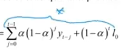
esta que tengo acá, esta, y reemplazarla acá.
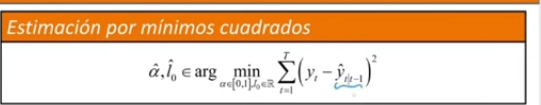
ir contrastando lo que va preciendo el modelo un paso adelante con lo que va observando y minimizar esta distancia al cuadrado, ¿cierto? Y así tratar de ver.
El problema es que por lo complejo del modelo, seguramente este problema de optimización no va a ser convexo, entonces no vamos a tener garantías de que el óptimo sea global, puede que sea local, pero no global, ni tampoco vamos a tener soluciones cerradas.
Entonces, esa fue la principal desventaja en los orígenes del modelo, pero ahora que tenemos buenos eh algoritmos computacionales, se volvieron a retomar este tipo de modelos, ¿cierto? Miren que otra cosa importante aquí pareciera que estuviéramos la pregunta es, ¿estamos tratando de estimar los parámetros con la idea de mejorar la bondad del ajuste o la habilidad del pronóstico?
Hm, es una pregunta dura porque en realidad todos los datos se están usando, todos los datos de la muestra se están usando, ¿cierto? Uno podría entonces pensar en particionar los datos, ¿cierto? Ser más juicioso y particionar los datos y entrenar con una parte, encontrar los parámetros y luego sí mirar qué también desempeña.
Pero por ahora estaríamos aquí nosotros. pensando es en realidad en bondad de ajuste, aunque no parezca.
Pero por ahora estaríamos aquí nosotros. pensando es en realidad en bondad de ajuste, aunque no parezca.
Minimos Cuadrados No Lineales
Bueno, entonces aparece un método, o sea, yo no sé si lo vieron ustedes, pero hay mínimos cuadrados no lineales, que es cuando la función no es lineal en los parámetros. Generalmente no se pueden solucionar.
- Analíticamente, hay que buscar estimaciones por métodos numéricos. Hay unos paquetes en R que hacen esto, pero bueno, sepan ustedes que hay unas cosas.
- Si uno pudiese introducir dentro de la cuestión unos errores que tengan distribución normal, podría darle buenas propiedades porque van a coincidir con los de máxima verosmiud, pero por ahora no hemos visto cómo hacer eso.
O sea, estamos hablando de un método heurístico, pero no lo estamos basando en estadística.
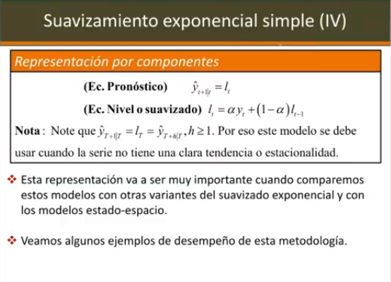
Este modeloamiento exponencial simple, que es el que estamos viendo, se puede escribir de otra manera. ¿Sí?
Y esta escritura va a ser importante sobre todo para cuando estemos moviéndonos a a modelos más complejos.
Sí, vamos a pensar en que y eso tiene que ver mucho con las representaciones espacio estado.
Sí. Eh, una cosa importante, bueno, ya lo vamos a ver. Bueno, va a haber dos ecuaciones para el modelo de suavizamiento exponencial simple.
Una que llamamos ecuación de pronóstico y otra que llamamos ecuación de nivel o de suavizado. Aquí es tonto porque en realidad la ecuación de pronóstico es [ __ ] el valor del nivel o del suavizado, ¿cierto? Miren que el suavizado está haciendo lo que ya hemos dicho, ¿cierto? Está cogiendo y ponderando la última observación con lo que traíamos del pasado y luego decimos que el pronóstico es L subt, ¿cierto?
Entonces, en ese orden de ideas, cuando uno hace suavizamiento exponencial simple, el pronóstico de todos los pasos va a ser igual al último valor de L.
O sea, en cierta manera este modelo no funciona bien. O sea, va a dar un pronóstico constante después de la parte de entrenamiento, después de haber visto los datos. va a haber un pronóstico constante para todos los pasos
Cuando se usa este Suavizamiento Exponencial Simple?
Bueno, ¿cuándo se debería usar este modelo? Pues cuando se tiene la serie no tiene tendencia ni tampoco tiene estacionalidad.
Ahorita vamos a ver las variantes para cada uno de esos casos, ¿vale? Pero va a ser importante que guardemos esta representación y la tengamos allí en mente.
Ejemplos
Ejemplo1
Bueno, miremos algunos ejemplos. Entonces, por ejemplo, en este primero, la serie original es la negra.
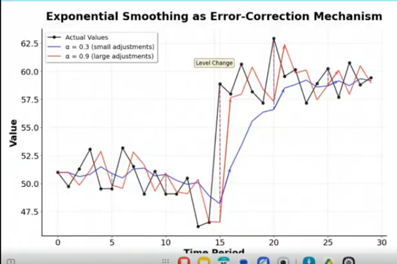
Y ustedes se dan cuenta, si el valor de alfa es muy cercano a uno, pues más o menos ya nos estamos acercando, como es el caso de la curva roja, casi al pronóstico de persistencia, a replicar un paso con un rezago de un paso eh lo que estaba pasando en la serie, ¿cierto?
Entonces, miren que alfa = 0.9 se parece mucho a a al pronóstico de persistencia.
En cambio, \(\alpha =3\), TR que es la curva azul, sí va actualizando, pero no está cambiando tanto. Claro. Y digamos de alguna manera trata de seguirle la la dinámica a la serie un poco más rezagado, por lo que no actualiza tanto.
Está actualizando solamente el 30% de su información cada vez que que se corre el algoritmo.Entonces, a pesar de que hubo un cambio de nivel, como ustedes pueden ver ahí, sola con alfa a los errores más grandes de alfa, se logra dar cuenta, pues un poco tarde, pero se logra dar cuenta del cambio de nivel que sucedió ayer. Entonces, esta es la gráfica uno. Sí.Ejemplo 2-
Miremos por acá otro caso. Aquí vemos más claramente lo del efecto del del del parámetro (de suavizamiento exponencial) alfa. Miren que los datos son la negra.
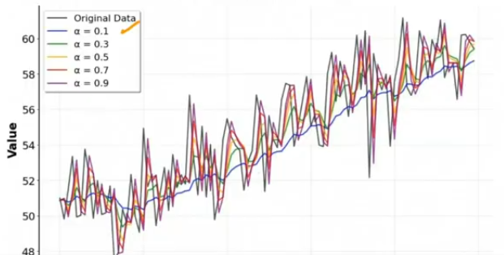
Datos= la curva negra.
Y a medida, claro, con \(\alpha=0.1\), tenemos una curva que en realidad prácticamente lo que está haciendo prácticamente lo que está haciendo es como un suavizado.
Valores pequeños de alfa : Pues ténganme en presente que alfa eh al valores pequeños de alfa son equiparables como a una media, es decir, estamos siendo casi como una especie de filtrado por un promedio móvil.
Entonces, ahí uno ve que pues borra ruido<>, pero no nos sirve tanto como para pronosticar y a medida que alfa va aumentando, cada vez replicamos de manera rezagada, obviamente, el valor de la serie, ¿no? Sí.
Ejemplo (Serie con Tendencia) (No usar Suavizamiento Exponencial)
Eh, una cosa importante, si uno coge una serie que tenga tendencia, o sea, una serie con tendencia, como es el caso:
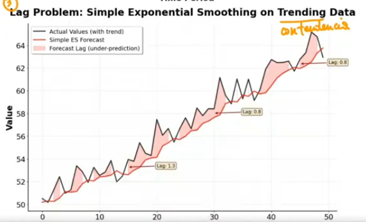
de esta serie eh, que está aquí en negro, ustedes se pueden dar cuenta que por más de que la serie igual trata de de que de preservar un poco la dinámica general, siempre va a rezagar.
Entonces, por eso es que no sirve para nuestro caso para para series con tendencia, porque si bien mal que bien, claro, nosotros queremos pronosticar, pero nunca vamos a estar al nivel prácticamente este pronóstico o este método siempre va a subprosticar en el caso de y la curva, el área roja lo que nos está mostrando es cómo sistemáticamente el pronóstico, en este caso eh con suavizamiento exponencial está por debajo siempre de la serie original, es decir, siempre nos va a llevar a su pronosticar, entonces por eso no se debería usar para series con tendencia ni tampoco.
Ejemplo 2 (Series Estacionales) (Tampoco usar Suavizamiento Exponencial)
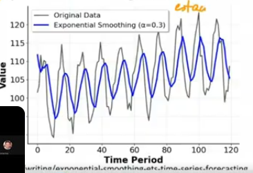
Pues bueno, en las series estacionales tampoco se debería usar, o sea, sí sonal, aquí estamos hablando de un ejemplo estacional.
Claro, visto ya después de pasado un tiempo, pues uno lo que logra ver es que sí logra, o sea, logra es mostrarnos más o menos en la borrar o filtrar algo de ruido, pero no nos va a hacer, o sea,
miren que otra vez la serie en cierta manera generalmente está muy por arriba o muy por abajo, o sea, es decir, no nos va a capturar muy bien eso.
Por eso hay variantes del suavizamiento exponencial que son la doble y la triple en las cuales ya ese tipo de cosas se arreglan, ¿vale?
Suavizamiento Exponencial Doble (Hold) (Hecho para Tendencias) (No modela Estacionalidad) (Con este si se puede Pronosticar pero de manera lineal )
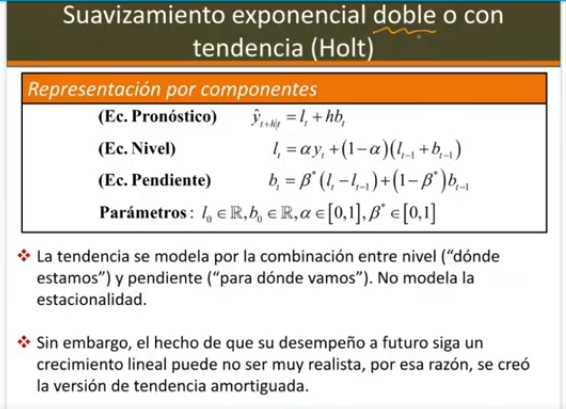
Entonces viene el suavizamiento exponencial doble propuesto por Hold, en - level: el cual él dice, “Vamos a modelar un nivel que era lo que ya traíamos en el L. El L de hecho es de level, ¿cierto? - Pendiente: Y vamos a modelar una pendiente, es decir, aquí vamos a estar guardando como hacia dónde se está moviendo la serie. Hagan de cuenta como la posición, ¿cierto? (Velocidad o Tasa de Cambio)
Y en el otro vamos a estar guardando la velocidad, o sea, la tasa de cambio, de tal manera que cuando vayamos a pronosticar tengamos la posición y tengamos también la manera de de mirar algo de tasa de cambio.
Ahí nos damos cuenta que los pronósticos ya no van a ser constantes, sino van a tener la forma de una línea recta.
Entonces, si pronostico h pasos adelante, b sub t, la última pendiente que tengamos va a ser las veces de de la pendiente de la recta y L subt va a ser las veces del intercepto.
Ya sabemos que con el eh suavizamiento exponencial doble vamos a tener vamos a poder modelar tendencias <>, ¿vale?
> ” Suavizamiento Exponencial = Modelar Tendencia” >
Aumentarán los Parámetros
La única cuestión acá es que los parámetros van a aumentar. Ya no solo vamos a tener el alfa, que alfa lo que va a estar guardando en cierta manera es, bueno, alfa es cuánto cuenta la información reciente, 1 men alfa es cuánto cuenta la información pasada, pero la información pasada ya no va aser solo de el nivel, sino también la tendencia que llevábamos del valor pasado y la ecuación de pendiente, que esa sí nos va a mirar como de alguna manera el cambio, o sea, cuánto cuánto a con beta, otro parámetro beta asterisco, vamos a guardar cuál fue el último cambio, como la tasa de cambio de la posición, ¿cierto? del nivel y vamos a mirar si actualizamos esa esa velocidad que traíamos o no con otros.
\(\alpha\)
\(\beta\) entre 0 y 1
Aparecen dos valores iniciales. Ya no podemos tener únicamente el L sub0 del nivel inicial, sino también tenemos que inicializar la pendiente con un valor B sub0.
Entces aparecen más parámetros, ¿cierto? Eh, bueno, pues ya lo que les decía, la tendencia y en general todo se va a modelar por una combina la tendencia, la ecuación dependiente o de tendencia se va a modelar por la combinación entre el nivel dónde estábamos y hacia y la pendiente, como con qué velocidad nos estamos moviendo.
- Este tampoco modela estacionalidad, ¿vale?
Ventaja
- cuando vayamos a pronosticar nos va a dar es una línea recta dependiendo de si el último \(b _t\)es positivo o negativo, va a ser una línea recta creciente o decreciente. H pasos adelante.
Desventaja
Sí, pero pues de alguna manera el hecho de que la tendencia sea lineal como que algunos lo criticaban también bastante y aparece entonces lo que se llama el suavizamiento exponencial doble con tendencia amortiguada.
O sea, en vez de poner un h
Suavizameinto exponencial Doble con Tendencia Amortiguada (Damped) (AYUDA A MODELAR TENDENCIA)
acá le ponemos otro parámetro.
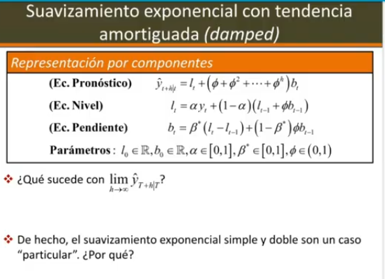
Otro parámetro \(\phi\) que va a modelar como el amortiguamiento que va a recibir esa esa tendencia, ¿cierto?
Y pues eso nos va a ayudar a a controlar un poco. Miren una cosa, ya no va a ser lineal.
Important- O sea, lo que nos está diciendo esto, si yo quiero pronosticar, miramos acá, y sub t + 1, dado t, sería el último LT que tengamos más fi por b sub t, ¿cierto? Cuando vayamos a hacer eh y sub t + 2, dado t, va a ser l sub tt +cuad por b sub tt. O sea, es decir, lt y b sub tt van a quedarse quietos cuando acabemos el entrenamiento, pero este parámetro fi, que también lo tendremos que estimar, miren que aparece un nuevo parámetro y ese sí tiene que estar entre cer y uno. Ya vamos a ver por qué. Eh, pues tenemos la cuestión allí de de que se nos va a ayudar un poco a ver hacer un comportamiento más realista de cómo puede ir cambiando eh el pronóstico. ¿Qué pasa si yo tomo el límite? Si a mí me da por hacer el límite cuando h tiende a infinito de y sub tt + h dado t, o sea, h se está moviendo infinito. En el caso anterior, si a mí me hubiera dado por tomar el límite cuando h tiende a infinito de y sub t + h dado t, esto me estaría diciendo que esto es más infinito, ¿cierto?
si b sub t es positivo o menos infinito si b sub t es negativo. Y bueno, l sub tt en el caso de que b sub t sea cer pues suponiendo que no es cer miren que de eso siempre diría que el crecimiento se mantiene en un mismo sentido. Eh, perdón, b subt mayor menor que perdón, perdón. En cambio, aquí en este caso, si ustedes toman el límite, vamos a hacer aquí rápidamente, ustedes son unos duros sacando límites, es h la que se va infinito, o sea, tendríamos si reemplazo sería L sub t + cuad + a la h y todo esto por b subt. Miren que en realidad la única parte que depende de h es este pedacito de acá. O sea, en realidad me tocaría analizar qué le pasa. Lo que necesitaría analizar es el límite. El resto de cosas se van a quedar constantes, pero cuando tomo el límite, cuando h tiene infinito, tendrías que sacarle el límite a eh a esta suma, ¿sí? Que otra vez es una suma geométrica, ¿cierto? donde la razón es fios que fi esté entre 0 y un para que en caso tal de que yo vaya a pronosticar muy lejos en el tiempo, pues esta suma no explote como le pasaba el caso anterior. ¿Qué nos da esta suma? Pues acuérdense, si estamos asumiendo que fi está entre 0 y 1 y tomamos el límite cuando h tiende a infinito, esto nos va a dar 1 sobre 1 - phi. Es decir, sí va a crecer, pero se va a estabilizar en algún punto y va a dejar de crecer. O sea, que en el infinito el pronóstico va a ser L sub t al final. Entonces, el límite cuando h tiene infinito de y sub t + h dado t, nos va a quedar l sub t y toda esa suma que era lo que dependía de esto, va a quedarnos más 1 sobre 1 - * b sub tt, no más. Ese va a ser el límite de esa suma de elementos que tenemos allá. ¿Sí?
Eh, y ese va a ser el pronóstico límite, es decir, no va no va a explotar como en otros casos.
Vemos ahí rápidamente que efectivamente el suavizamiento exponencial simple es un caso particular cuando tenemos que f vale cer. Sí, o sea, bueno, cuando fi vale, la cuestión es que creo que cometí un error acá. Ah, perdón. Está mi esta suma?
- Esta suma, miren que empieza en fi, o sea, la suma en realidad empieza en uno.
Miren, yo confiado de que tenía bien la matemática, ¿no? Esta suma va así. Entonces, esto en realidad nos da eso. Fhi. Entonces, efectivamente, si fi es igual a 0, estaría estaríamos como caso límite teniendo el Entonces, miren, fi 0 estaría dándonos el suavizamiento exponencial simple.
- Y de hecho, bueno, si quieren ponerlo, pues claro, fiar el valor de cero. En este caso, a partir de límites, estaríamos diciendo que fi tiende a ceroy si fi tiende a uno, estaríamos recuperando el suavizamiento exponencial doble porque fi 1 nos daría h veces y ahí podría volver a explotar.
Entonces, en este caso, si vemos que la estimación de finos da muy cercana a cero, es posible que en ese modelo se actualice bien el comportamiento eh de suavizamiento exponencial simple.
Y si Fi =1, si bien no es uno, nos estaría indicando que podría hacerse suavizamiento exponencial doble clásico.
El fi también está jugando un papel por acá, si ustedes se fijan, está atenuando la pendiente, está descontándole algo a la pendiente como para que el efecto de la pendiente como que pierde forma, como que se fricciona.
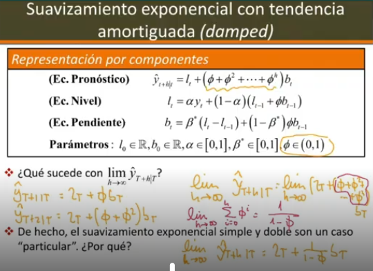
Por eso se llama Damp = Amortiguamiento
Por eso se llama damp. Damp inglés es como eh amortiguado, es decir, que de alguna manera se va va decayendo ese efecto y no le pasa lo que le pasaba al anterior, ¿vale? Eh, bueno, bien. Entonces, también está esta variante, esta también ayuda a modelar tendencia. Aquí hay un ejemplo.
Miren lo que les mencionaba ahoritica. Vamos a mirar primero este gráfico. Aquí estamos viendo suavizamiento exponencial simple, el que solo tiene alfa y el de Hold que tiene alfa y beta.
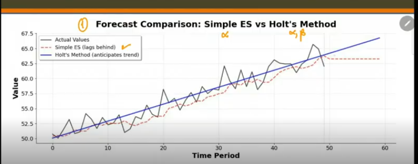
Miren ustedes que cuando hacemos el de el rojito, si bien la la serie primero pues trata de llevarle el nivel, siempre está subpronosticando en la mayoría de casos y al final cuando acabamos el entrenamiento se queda constante porque el pronóstico del soaveamiento exponencial simple, pues ese es el la cuestión. cambi en que el suavizamiento exponencial doble, bueno, aunque dudo un poco que sea una línea recta tan perfecta, eh, pues lo que sí nos dice es que este no es amortiguado. Eh, cuando se acaba el entrenamiento, pues el pronóstico en ese caso, dependiendo si el último B subt era positivo, pues se va a quedar un pronóstico que nos va a indicar y no más o menos nos va a estar mostrando es la línea de tendencia de sobre todo de los últimos cambios en la serie, ¿vale?
Eso es el suavizamiento. Bueno, aquí les adelanto de una vez lo que le pasa. O sea, así como el suavizamiento simple tiene problemas y no logra primero replicar el comportamiento de la serie ni llevarle el ritmo, no lo logra.
Suavizamiento Exponencial Triple (BUENO EN COMPONENTE ESTACIONAL)
Y cuando vamos a pronosticarnos a un pronóstico constante, el suavizamiento doble, este es el doble, tampoco le va muy bien cuando lo comparamos con el triple en el caso de que haya una un componente estacional.
Miren acá las esta serie de acá, la serie no se alcanza a ver bien, es una serie negra que tiene un comportamiento periódico anual, ¿cierto? Es decir, hay un comportamiento estacional y le estamos ajustando dos modelos.
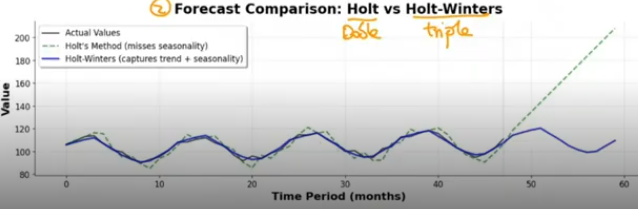
En verde le estamos ajustando un modelo de hold que igual logra, o sea, intramuestra más o menos sí logra llevarle el ritmo, ¿no?
No nos queda mal, pero cuando va a pronosticar él saca de una vez su línea recta, ¿cierto? saca su LT cuando se acaban los datos más HBT y eso es lo que termina pronosticando.
En cambio, ya vamos a ver cómo funciona Hold Winters o el servicamiento exponencial triple. Sí replica, como ustedes pueden ver ahí ver ahí en azul el comportamiento cíclico que debería mantener esa serie a futuro.
Justificación de por que hacer Estadística Descriptiva para las Series, para ver sus componentes y saber que ajustarle
Vale, ahí vamos viendo que efectivamente dependiendo vale la pena hacer estadística descriptiva al inicio, ¿cierto? Y después de haber hecho estadística descriptiva, eh, notar que si la serie tiene sus componentes, y vamos a hacer uno de estos módulos, pues saber usar cuál es el más adecuado.
En este caso, ¿no? Aparece entonces lo que llamamos ya la versión de Hold Winters, que hay dos versiones. Esta va a tener ahora más ecuaciones. Antes teníamos suavizamiento exponencial simple, solo tenía ecuación de pronóstico y bueno, ecuación de nivel, monitoreaba el nivel, ¿cierto? su avizamiento exponencial doble empezó a monitorear a parte de pronóstico y nivel también pendiente y este va a tener una ecuación para la estacionalidad. este se complica un poco más, o sea, más o menos. Por eso vamos pues de manera incremental, eh, porque
Suavizamiento Exponencial Triple(Hold-Winters)
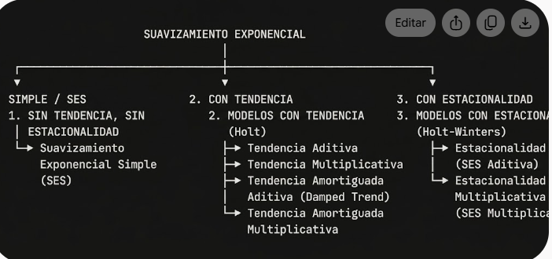
Hold Winters Additivo
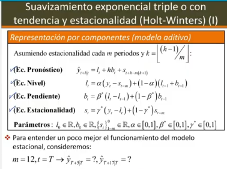
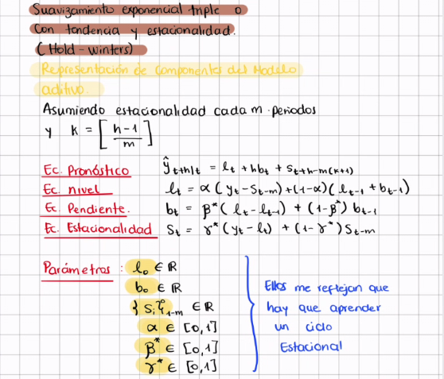
Suavizamiento exponencial triple, este es el aditivo, porque hay dos variantes, está el aditivo y el multiplicativo.
Vamos a hablar un poco del aditivo. En la tendencia, miren que va a sumar unos, o sea, pues está el último nivel más el efecto de la tendencia más un efecto debido a la estacionalidad.
Estacionalidad : Esa es es de seasonality. Y la estacionalidad la van a monitorear con otro parámetro gama que nos va a decir cuánto cuenta o cómo se actualiza la información de la estacionalidad a medida que vamos avanzando en el tiempo.
Así como beta controla cómo se actualiza la pendiente y alfa controla cómo se actualiza el nivel. Entonces todos van influyendo allí. ¿Vale? Aparecen más parámetros. Bueno, y ya ahorita les voy a explicar un poco más en detalle, pues aparecen. Ya es claro que necesitamos alfa, beta, gama.
Antes necesitábamos, me voy a devolver acá, un valor de inicialización de la pendiente y otro valor del del nivel, ¿cierto? Pero bueno, lo mismo acá en el en el en el suavizamiento exponencial sin amortiguamiento, pero aquí miren que aparece un valor inicial de tendencia, uno de uno de perdón, uno de nivel, uno de pendiente, pero aparecen varios valores iniciales en la estacionalidad porque me toca aprender esto de aquí está reflejando que toca aprender al menos un ciclo estacional, ¿sí? Entonces toca inicializar no solo un valor inicial, sino un valor inicial. Y ahorita lo vamos a ver por varios ciclos.
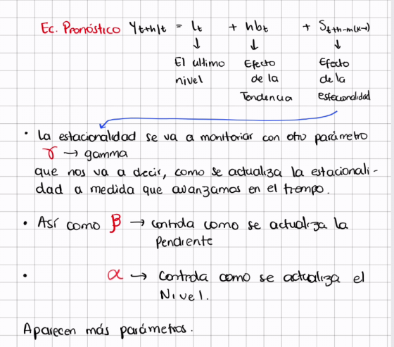
Ejemplo
Entonces, vamos a mirar un ejemplito, o sea, porque aparecen varias cositas, ¿no? Eh, voy a tratar de explicarles un par de cositas. Miren que aparece, bueno, suponemos que la estacionalidad es cada m periodos, o sea, digamos, si estoy hablando:
Estacionalidad Mensual M=12 Trimestral M=4 Semestral M=2 Y aparece este K, que pues miren que este K es importante,¿eh? Ese K, ¿dónde lo terminamos usando nosotros?
Acá. Miren, este K de acá lo vamos a terminar usando acá, pero quiero explicarles un poco por qué. Un poco por qué. Entonces, miren qué importante. Vamos a tomar un ejemplo de una serie mensual. Les voy a hacer un ejemplito. Vamos a hacer un ejemplito. Ah, perdón. No, no, no, no, no, no, no era esto lo que quería hacer. Quería insertar una página. Vamos a tomar el ejemplo.
Ejemplo
Entonces, m = 12 nos está diciendo que nuestra serie es mensual. Vamos a suponer que hay estacionalidad. Entonces, nuestros parámetros, ¿quiénes van a ser? Bueno, tenemos un L0, que es el valor inicial del nivel, ¿sí? un B0 que va a ser el inicial de la pendiente. Pero miren ustedes que para los valores iniciales de la estacional decimos que tenemos ese subir desde 1 - m hasta desde 1 - m hasta 0. Es decir, este conjunto, ¿a quiénes tiene acá? Tendríamos a ese. Bueno, si m vale 12, 1 m nos da s -11, ese -10, ese -9, así hasta ese sub. Si ustedes cuentan, aquí habría 12 valores iniciales que estarían caracterizando un ciclo inicial de estacionalidad.
Ciclo inicial de estacionalidad. Sí. Entonces, no me sirve, no voy a, no puedo tener únicamente un valor inicial, me toca tener m valores iniciales, ¿cierto? Y ahorita vamos a ver pues cómo hace el modelo, pero aparecen muchos más parámetros cuando hacemos el método de Pa Winters.
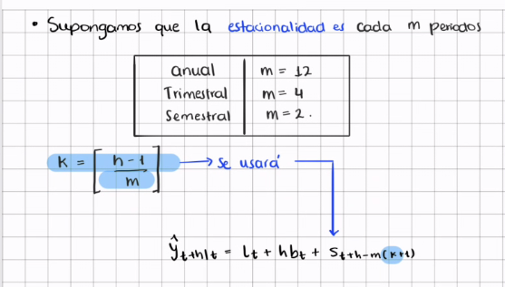
Bueno, aquí están las ecuaciones, no las voy a volver a copiar y hay tres valores allí.
Quiero que nos concentremos en la ecuación de Ah, bueno, nos dice adicionalmente que K, bueno, esto era como en parámetros, ¿cierto?
Vamos a poner acá. Entonces, tenemos, ya sabemos que m es 12 y nos dice que nos toca calcular un k, que va a ser el valor de h cuando vayamos a pronosticar -1 sobre m. Y en la parte todos conocen lo que hace esta función, ¿no? La función piso. Entonces, yo le paso tres. Bueno, me va a buscar el entero menor o igual al número que yo le estoy pasando allí. Entonces, esto es tres, ¿no? 2.8. Esta función me lleva a dos, no es aproximación, no es redondeo, ¿no? Solamente como por curiosidad. Hay que tener cuidado con los negativos. Bueno, esto nos daría cer, por ejemplo, -1.3, algunos erróneamente dirían que esto es -1, pero -1 es más grande que -1.3. Como busca el entero por debajo, esto nos da es -2, ¿no? Pues para que lo recuerden ahí en su baúl de recuerdos cómo funciona la función eh piso. Pero entonces, mir, vamos a ver.
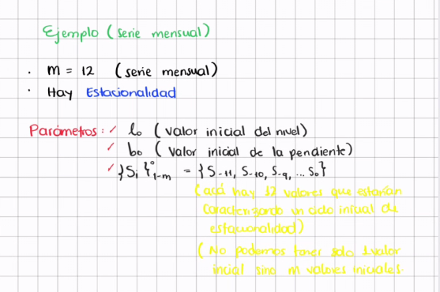
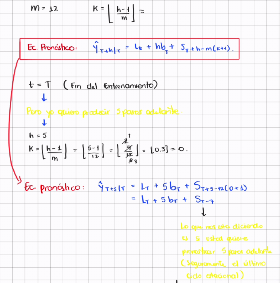
Nosotros cuando acabamos el entrenamiento llegamos hasta este nivel de acá, pero eh estamos tratando de pedir el horizonte 17.
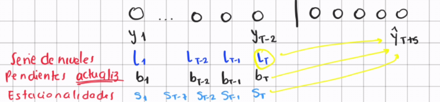
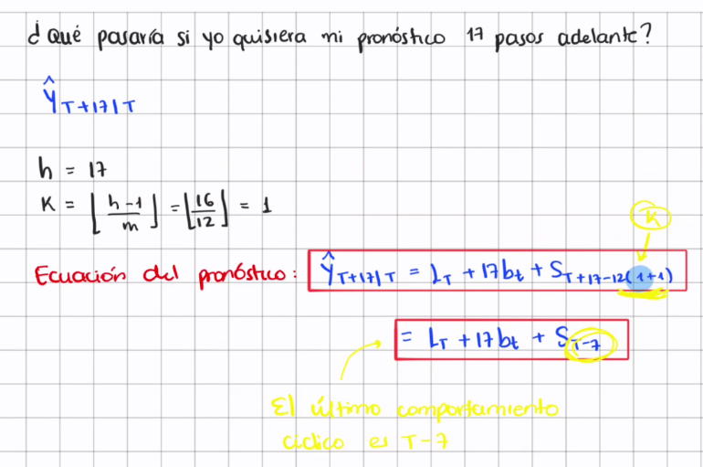
Suavizamiento Exponencial Triple o con Tendecia y Estacionalidad (Hold-Winters) (Modelo Multiplicativo)
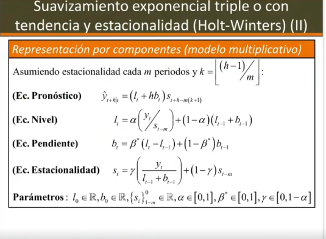
Aparte de que también eso en el caso multiplicativo. En el caso multiplicativo, ¿vale? Porque aquí la estacionalidad, miren que vuelve y entra por acá. Bueno, ahí se van actualizando cada uno y lo importante es entender que están tratando de aislar las cosas.
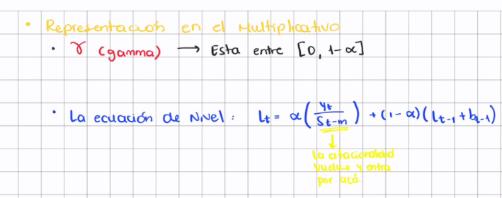
Ejemplo de una serie
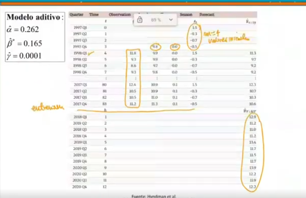
Miren acá esta serie, esta serie que ustedes ven aquí, eh, estos son los valores reales. O sea, los valores reales son estos. O sea, empiezan. Esto es tomado del libro de Hitman, por si alguno eh quiere consultar. La serie empieza en el en el primer trimestre de 1998. Acuérdense que como parámetros tenemos, bueno, alfa, beta y gama. Y fuera de eso tenemos y como esta serie es trimestral necesitamos cuatro valores de como la frecuencia como m es cu necesitamos cuatro valores iniciales de estacionalidad que eso los aprende el modelo solos. Un valor inicial dependiente y un valor inicial de nivel. Y a partir de eso él empieza a calcular con las ecuaciones y con los valores observados, los nuevos valores, y al final pues empieza a generar pronósticos. Sí, que después de esto, o sea, el entrenamiento acaba acá acaba el entrenamiento, ¿sí? Y ahí luego empieza a usar la ecuación y se puede ver pues en esa ecuación yo no sé si les traje el gráfico. Sí, ahí se puede ver como bueno es era la serie que estaban analizando Hitman y era la del turismo.
Se ve claramente como hay ciclos estacionales y nos damos cuenta que también hay tendencia y miren que el modelo de H Winters, tanto el aditivo como el multiplicativo, como que hacen un buen trabajo, es decir, ¿no?
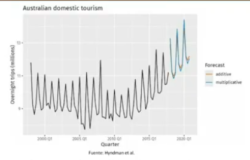
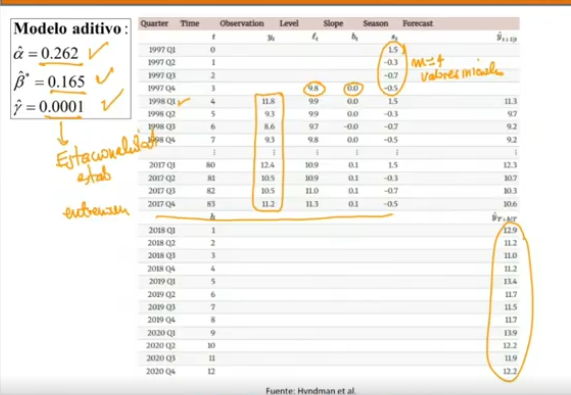
El $\alpha$ asi de pequeño nos esta diciendo que no se actualiza tanto solo en un 26% con el valor nuevo
La pendiente \(\beta\) tampoco se actualiza mucho
La Gamma tambien nos dice que tanto se actaliza el cicl, es muy pequeño
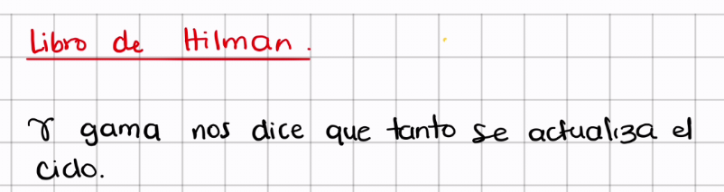
Si se hubiese usado el modelo aditivo, ahí podemos ver que en realidad el alfa tan pequeño nos está diciendo que el nivel no se actualiza tanto, solo en un 26% con el valor nuevo. La pendiente tampoco se actualiza mucho, es decir, de alguna manera eh no se está actualizando tanto. Y el gama, bueno, yo no sé si discutimos que era gama. Gama también en cierta manera nos dice qué tanto se actualiza el ciclo. Miren que en sí el ciclo pues no es siendo que no se actualice mucho, pero se actualiza, pero no no a niveles como no no como un pronóstico de persistencia que ya la última observación es lo observado. Lo que interes esto nos está diciendo de alguna manera que la estacionalidad es más o menos estable, o sea, lo que él estimó acá al inicio es más o menos estable en el tiempo.
Sí, mucho más estable que los demás componentes, porque el gama de actualización es muy muy pequeño, ¿cierto? Entonces, no le no cambia mucho, o sea, como que el comportamiento periódico según ese modelo no cambia mucho. Bueno, aquí les mostraba esta gráfica en la que se ajustan ambos, tanto el aditivo como el multiplicativo.
Y Cómo Definimos Cual es el mejor?
Y la pregunta sería, bueno, ¿y cómo definimos cuál es mejor? ¿Cierto? Esta pregunta es sobre todo también de reflexión.
Si alguno quiere para ir repasando, pues puede ir pensando en en en qué, en pausar el video, pero uno lo que haría, ¿cierto? Bueno, si alguno ya está pausando el video, bueno, lo puede hacer también es decir, bueno, tal vez ah, voy a particionar mis datos,
voy a hacer algo, aunque aquí hay un problema con esta serie, es que si yo la particiono y dejo unos datos de validación o de prueba, este serie histórica no, miren que no tiene tendencia tan marcada.
La tendencia empieza en los últimos periodos. Eso es crítico a veces en series de tiempo. Casi que no me puedo dar el lujo de particionar para ver qué modelo es mejor usando los mismos datos que ya tengo, porque la serie está cambiando de comportamiento, ¿cierto?
De pronto puedo cortar más bien por acá
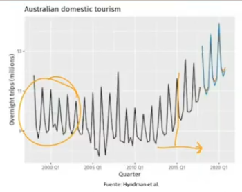
y aprovechar de pronto con ventana de ancho fijo para que este pasado no cuente tanto y y al final logremos como puede que sí, o sea, puede que sí, pero de todas maneras pues ahí hay una cuestión importante sobre eh que no podemos, o sea, no se ve tan natural que ya habíamos hecho antes por el hecho de que la serie está apareciendo que está cambiando de de de de sí de de fenómeno.
Otra Solución
Otra cosa importante, se podría hacer eh con tendencia amortiguada, por ejemplo, la versión multiplicativa. También se puede hacer la aditiva con versión amortiguada, pero pues la única diferencia es que aparece también el fi.
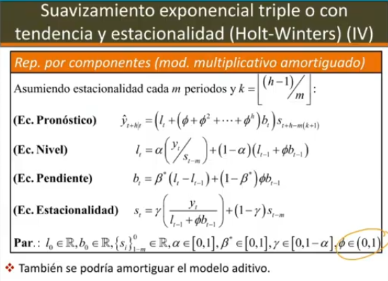
Miren que el número de parámetros ha crecido bastante. alfa, beta, gama, fi, los valores iniciales de estacionalidad, los valores iniciales de tendencia y de nivel, o sea, aparecen bastantes bastantes cosas allí y y pues obviamente solo a medida que los datos lo requieran es que deberíamos recurrir a esto, ¿no?
Universo de Modelos
Entonces, importante, no vimos muchas posibilidades, o sea, vimos algunas, ¿cierto? Vimos algunas, pero quiero que sepan que esto hace parte de un universo de modelos, ¿sí?
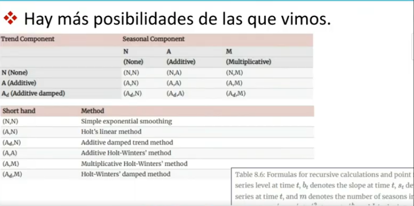
- en los cuales uno podría especificar esta anotación es tomada de Hitman3, o sea, y esto lo propusieron en algún momento, dependiendo de como uno quiera modelar, o sea,
la clave está en que el nivel pues siempre va a estar incluido, porque incluso en el en el en el suavizamiento exponencial simple, pues hay nivel, o sea, el nivel no tiene eh discusión, pero la tendencia puede estar puede estar aditiva o puede estar puede no estar, perdón, puede ser aditiva o puede ser aditiva con amortiguamiento. ¿Sí? Entonces, miren que aparecen tres posibilidades para la tendencia.
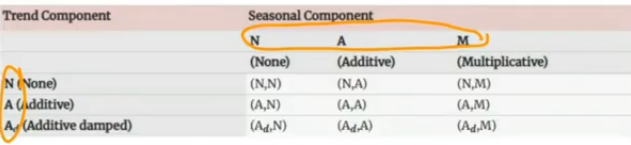
Y para el componente estacional puede aparecer, no puede no aparecer como en whole win, en whole oave exponencial doble y en suavizamiento exponencial simple, puede aparecer aditivo o puede aparecer multiplicativo. Pues empiezan a aparecer todas las combinaciones posibles. Nosotros no las vimos todas, vimos solamente algunas. Entonces, ya sabemos que, por ejemplo, suavizamiento exponencial simple, algunos lo podrían denotar como nesta anotación. Sí.
Entonces, porque NN indicaría N, ninguno para tendencia, ninguno para estacionalidad. El el módulo lineal de hold se podría ver como a subn porque está modelando la tendencia aditiva, no hay componente estacional.
Eh, y el el amortiguado pues sería A sub DN de Hold porque otra vez la tendencia está amortiguada, pero no hay componente estacional. ¿Cuáles vimos adicionales?
Vimos whole winters aditivo, en el cual pues sería aa porque tanto tendencia como estacionalidad van en componente aditivo. Vimos AM cuando tendencia es aditiva, multiplicativo y también ADM. Pero miren que en realidad habría nueve posibilidades. Hubo unas que no, en cierta manera nosotros no estábamos considerando. Por ejemplo, como esta, como de pronto modelos en los cuales eh haya estación, estos que están acá, haya estacionalidad, pero no haya tendencia.
Siempre incorporamos, supusimos que si había que que en todos los modelos en los que hubiese estacionalidad tenía que haber tendencia, pero esos tres, esos dos que están allí que no tienen tendencia, solamente estacionalidad, podrían ser otra posibilidad. Entonces, ¿por qué esta taxonomía es importante?
Porque en realidad ya en los paquetes uno podría ajustar cualquiera de los nueve
, ¿sí? O sea, aparecen muchas más posibilidades. De hecho, por acá eh también tomado del libro de Hitman, aparecen ya las ecuaciones que se utilizarían en los nueve casos, dependiendo ya de si es NN, NA, NM, a,
9 Casos
bueno, todas las nueve posibilidades, ¿vale?
Eh, aquí están todas las ecuaciones. Claro, maravilloso, porque ya tenemos más posibilidades.
Descripción de la Serie
Una primera manera de saber si necesitamos todo eso es hacer análisis descriptivo de nuestra serie y ver si tiene tendencia, ver si tiene estacionalidad, si puede llegar a ser multiplicativa o aditiva.
Bueno, todo ese tipo de cosas, ¿cierto? Para descartar algunos, pero aún así le pueden quedar uno varias posibilidades. Entonces, la cuestión es que ah, bueno, se me olvidó.
Entonces, bueno, te pueden quedar uno varias peleas. Aquí tenemos nueve. Pues resulta que la verdad creo que fue Hitman y ellos también generalizaron este enfoque, o sea, ahoritica estábamos enfocados en modelos que llamaríamos TS.
Estos modelos de acá son modelos TS porque lo único que está en discusión es cómo va a ir la tendencia y cómo va a ir la estacionalidad, ¿cierto? Pero hay una generalización mayor que son los ETS.
Y ojo que ETS no es enfermedad de transmisión sexual,
es E de error, T de trend y s de seasonal. Entonces, una generalización que hicieron fue la de eh considerar, bueno, un componente de error, si el error se suma o se multiplica y con esos errores, si uno también les pone distribuciones, podría ser, por ejemplo, máxima verosimilitud, podría ser otras cosas, ¿cierto?
EL ERROR SE PUEDE MULTIPLICATIVO / ADITIVO POR QUE SE LE PUEDE ASOCIAR UNA DISTRIBUCIÓN
Pero por ahora pues hay los errores pueden entrar de manera aditiva o de manera multiplicativa. O sea, que cuando ya uno especifica un modelo, uno diría, por ejemplo, algo así,
eso estaría indicando aditivos los errores, aditiva a la tendencia y aditiva a la estacionalidad.
¿Sí? O sea, las tres. Ahora lo indicaríamos con una terna. Los que teníamos antes, eh, bueno, hay una hay una equivalencia entre ellos y los modelos ETS, ¿sí? Pues, o sea, ustedes pueden buscar allí claramente cómo se pueden reescribir, pero pues no, en este momento no nos interesa, pero lo importante es que ya no son nueve, sino son 18 posibilidades las que tenemos, ¿cierto?
Supongamos Errores Normales
Bueno, ahí es donde viene el punto. Esos errores, si uno cuando uno introduce esos errores si suponemos que esos errores son normales, es posible utilizar máxima verosimilitud para estimar los parámetros con ventajas de poder hacer inferencias sobre los coeficientes, porque por el método de estimación que habamos visto hasta ahora, solamente obtenemos una estimación puntual, no vamos a hacer inferencia y pues de una vez solamente utilizamos esos modelos como eururísticas para pronósticos, pero no podríamos ser inferencia, ¿cierto?
Beneficios de Usar Máxima Verosimilitud
También podríamos cuantificar la incertidumbre alrededor de esas estimaciones. Entonces, son las ventajas que tendríamos si usamos máxima verosimilitud, ¿cierto? Ahí les puse cuáles como para que ustedes piensen por qué por qué máxima verosimilitud nos trae esas ventajas. Y es por el hecho de que ustedes recordando sus otros cursos que los estimadores de máxima verosimilitud tienen unas distribuciones asintóticas particulares.
No importa el modelo que sea, desde que se cumplan ciertas condiciones de regularidad vamos a tener esas condiciones. Eh, hay que tener cuidado porque si uno estima por máxima resnitud o por mínimos cuadrados, como vimos antes, no van a coincidir, sobre todo cuando los errores son multiplicativos. Y es el hecho de que eh bueno, hay problemas cuando uno toma logaritmo, ¿se acuerdan? Porque para los errores multiplicativos toca transformar los modelos para usar mínimos cuadrados. Entonces, bueno, ahí aparecen unas cosas. Ese por qué tiene que ver con eso.
También se pueden relajar algunas de las restricciones sobre alguno
s de los parámetros para que para mejorar un poco las relaciones con otros modelos. Bueno, eh no, en realidad no podemos considerar todas las posibilidades, pero la pregunta seguiría siendo, bueno, ¿y cómo escogemos? Una manera haciendo estadística descriptiva, ¿cierto? Hay algunas combinaciones que se ha visto que son bastante inestables numéricamente y son estas tres que ustedes ven ahí.
(EVITAR ESTAS)
Entonces, uno las trata de evitar, ¿cierto? Pero pues como ya les pusimos o bueno, se puede ponerles distribuciones a los errores, por ejemplo, normales o cosas por el estilo, se puede se suele usar o Hyndman 4, el autor del libro sugiere utilizar, por ejemplo, el AIC eh para tratar de de escoger un
Y mira, “Profe, pero el AIC es
. Y sí, en eso estamos totalmente de acuerdo y lo hemos discutido en la clase, pero Hinman prueba este teorema que nos dice que sobre todo si uno va a pronosticar solamente un paso adelante, o sea, muy cerca de la ventana de entrenamiento, minimizar el AIC o buscar el modelo que minimiza el AIC es asintóticamente equivalente a minimizar el error cuadrático me dio un paso adelante.
Es decir, equivaldría el modelo que seleccione el AIC, el con el más bajo AIC, puede eh garantizarnos que el modelo va a predecir bien un paso adelante, o sea, no nos garantiza mucho más que un paso adelante, o sea, pero ya nos da evidencia de que el AIC no solamente, si bien está orientado principalmente a bondad de ajuste, pues no se queda ahí, puede mostrarnos más. Vale,
finalmente, pues bueno, ya con un supuesto distribucional, podemos ir más adelante, que lo hablábamos la vez pasada, a veces un valor puntual puede quedársenos corto dependiendo del prop del propuesto que queremos. Podemos incluso crear intervalos de pronóstico, ¿cierto?
IC para modelos Aditivos
Cuando el modelo es aditivo, a a través de la normalidad se pueden utilizar prácticamente como resultados muy similares a a lo que uno está acostumbrado acá.
Y la cuestión es que este percentil de acá, pues algunos autores usan el de una normal estándar, pero hay que tener cuidado. Sí, yo preferiría de pronto simular esa distribución y luego ver qué percentil
tomar, pero la cuestión es que se podrían construir, sobre todo en modelos con errores aditivos, se podría construir el intervalo muy fácilmente.
IC para modelos multiplicativos
Si es multiplicativo, es un poquito más complicado. Tocaría, se viene una simulación, Monteclos, de eso de pronto hablamos más adelante. y sacamos percentiles de la distribución y armamos con dos percentiles o dos cuantiles lo que sería el intervalo.
Pero bueno, por ahora nosotros sepan que esto se puede hacer de pronto en el siguiente video que estamos haciendo algo de código y mirando cómo funcionan estos modelos, podemos ver algo de de cómo de cómo qué de cómo eh ay, o sea, de cómo hacer este tipo de elecciones del del percentil de la distribución . cierto, o sea, cómo sacar intervalos de predicción a partir de los modelos eh de suavizamiento exponencial y los modelos ETS, ¿cierto? Podríamos mirar eso.
Formulas para la Varianza del error estándar de Predicción
Eh, pero bueno, sepan que se pueden aplicar estas fórmulas. Aquí están las fórmulas para algunas combinaciones de cómo sería la varianza del error estándar de predicción de algunas combinaciones. . -Entonces, ahí están deducidas, también están en el libro de Hitman, pues para por si alguno las quiere consultar.
Vale, con esto pues damos por visto una un primer tipo de modelos. En el próximo video les voy a mostrar e algunas cositas relacionadas con eh la implementación en R, un poco de la metodología y de estos modelos, pues para que lo tengan ahí presente.
Vamos a a movernos, o sea, esto eso cierra el módulo dos de nuestro curso. Aquí estaríamos empezando y vamos a trabajar unos minuticos sobre el módulo 3.
-
que es el de modelos Arma, que estos modelos ya son modelos estadísticos y pues tienen todo un sustento en la probabilidad.
Estos otros en realidad no nacieron así, pero se les ha visto ciertas equivalencias. Más adelante vamos a ver que algunos métodos de suavizamiento tienen que ver con con otro tipo de esto, pero aquí sí necesitamos modelos estadísticos y necesitamos pues obviamente teoría de probabilidad para entender algunas cosas.
Entonces, bueno, lo que quiero convencerlos, me quedan unas cuantas diapositivas, unas cuantas muchas, pero no me voy a demorar mucho en esto, es que, ¿por qué necesitamos más si ya en la regresión teníamos de pronto algunas cosas? Se acordarán de que la regresión tenía cinco supuestos, pues más o menos lo de haber visto así. Eh, uno de ellos importante era el que no hubiese multicolinealidad.
Lo otro era que pedíamos que la componente sistemática del modelo pues fuera lineal en los parámetros y
pedíamos también que los errores fueran de media a cero, de variancia sigma cuadrado y que no hubiera correlación entre ellos. Más o menos eso es lo que teníamos allí. Y nosotros decimos,
Teorema de Gaus Markov
“Ah, bueno, estamos ya entrando en el mundo estadístico, se olvídense un poco de lo que hablamos ahí al final del otro video. Si yo si ustedes vieron en su curso de regresión el teorema de Gaus Markov, vieron que los estimadores de mínimos cuadrados que se obtienen bajo esa lógica y bajo esos supuestos y sin ni siquiera hablar de normalidad tienen muy buenas propiedades,. ¿cierto?
Insesgado = blue
Insesgado + Normalidad = umbue
De hecho, ese estimador es el de los mejores lineales sin sesgados, ¿sí? O sea, es el blue y si hay normalidad es aún mejor porque es el umbue.
Para ese tipo de cosas. La pregunta sería, bueno, ¿y si será que yo no puedo usar todas las técnicas de regresión en series de tiempo? Vamos a ver, vamos a ver rápidamente.
Ah, bueno, aquí está la segunda parte. El teorema de Gusmov tiene dos partes.
Esta parte no pide normalidad y ahí nos dice que este señor es el blue, o sea, él es el mejor.
O sea, si aquí tuviéramos todos los estimadores, todos los posibles estimadores de los coeficientes de la regresión y aquí están los incesgados y dentro de los incesgados tenemos un subconjunto más chiquito que son los lineales.
Lineales es porque procesan la información de manera lineal. Miren que esta y aparece aquí lineal. Este señor Blue es el mejor de ellos. O sea, ya de todos estos no tengo que ponerme a buscar más. Si propongo algún otro que sea lineal e inciesgado, no va a poder ser mejor en varianza que este señor que está acá, ¿cierto? Eso sin suponer normalidad.
Miren que por ahora hemos supuesto que los errores tengan distribución normal. Ustedes en regresión luego vieron, ah, pero si suponemos normalidad y luego obamente, claro, la logramos verificar nosotros, el resultado es aún más fuerte porque y aparece la
Segunda parte de la versión de Gaus Markov
segunda versión del teorema de Gaus Marcov y es que ese estimador de antes bajo normalidad ya no es solo el blue, es el umbue. Es decir, este señor de acá ya no ya deja de ser. Veamos de pronto este grafiquito acá. Vamos a ver si nos cabe por acá. Esto lo va a pasar muy rápido, pues porque mi objetivo no es concentrarme ahí, pero en ese diagramita sabíamos que por acá estaba este señor Beta Gorro, era el mejor, pero vamos a poder ampliar el conjunto sobre el que decimos que él es el mejor, ya va a ser el mejor de todos estos. Claro, dentro de los sesgados puede que haya alguien mejor, pero al menos dentro de los inesgados si añadimos la normalidad y la normalidad se verifica en nuestros datos, el señor es el mejor, ¿cierto? Eso es lo que sabíamos nosotros en regresión, ¿cierto? Ahora bien, nosotros ya habíamos trabajado eh y ahí para allá vamos a las en las ecuaciones de diferencia, o sea, piensen que hasta ahoritica o lo que vemos en el módulo uno no tenía el error, ¿cierto?
# Ecuación en Diferencia Estocástica (V.A + el error)
Ahora las escribí en mayúscula para indicar que vienen de variables aleatorias y añado el error importante, o sea, estamos añadiendo el error. Esto sería una ecuación en diferencias estocástica. Sí, estocástica eh, por el error. Sí, resulta que uno diría, “No, profe, pero eso se parece a un modelo de regresión.” O sea, yo podría pensar que si estas y esta la llamo x1, esta la llamo x2, esta la llamo x k, pues puedo armar una matriz x y hacer todo lo mismo que yo visto antes, ¿no? No tiene mucha dificultad.
Bueno, sí, no, en ese sentido, eh, sí se puede, pero aparecen un par de cositas allí. Primero, si mi serie tenía datos desde un hasta t, o sea, teníamos t datos, vamos a darnos cuenta que dependiendo de cuando escribamos esto como un modelo de regresión, pues, por ejemplo, este vector de y ya no va a tener, ya no va a ser t por 1.
Ya vamos a ver por qué. Porque piensen que para poder yo ajustar, para poder hacer un ajuste de regresión, tengo que poder escribir, bueno, dado una observación y sus valores pasados, que serían las variables si yo empiezo con y sub 1, tengo valores pasados de ella, ¿no?
Entonces me toca empezar desde un valor, por ejemplo, y subk + 1 para garantizar que tengo todos los valores pasados de ella, ¿cierto? Y con esos valores pasados, pues logro eh utilizarlas como variables explicativas para que esta sea x1, x2 hasta xk, ¿cierto? Luego y subk + 2 utilizo entonces un paso atrás, dos pasos atrás, etcétera.
Entonces, miren que este objeto ya perdió observaciones, ya no tiene t observaciones, ahora tiene, piénsenlo, si no tiene t - k por 1, ¿cierto? perdimos las primeras K porque no para ellas no tendríamos variables explicativas.
¿Cómo yo escojo ese k?
Bueno, entonces dependiendo si escogemos un K muy grande perder muchas opciones. Nuestro tamaño de muestra se va a reducir bastante en el contexto de la regresión. Si ustedes recuerdan la las columnas, bueno, la x es una matriz que tiene t - k de filas porque es una por cada individuo, una por cada respuesta y en las columnas tendríamos pues k + 1, ¿cierto?
porque son k valores pasados y el intercepto que lo pondríamos con unos allí, ¿cierto? Y finalmente en beta pues tendríamos k + un entradas por uno, ¿no? Entonces, miren que ah no, profe, listo. Salvo lo que usted nos dijo de que se perdían algunas observaciones, eh, ya ahí está la codificación. Yo puedo hacer x traspuesto x a la -1, x traspuesto y y obtener la estimación de beta y de pronto aprovechar el hecho de que Gaus Markov 1 y 2 me dicen que ese es el mejor estimador y ya todo lo volví una regresión y felices todo. Nos vamos temprano hoy para la casa. Pues no, hay varias cosas allí que tenemos que entrar
a mirar. Primera cosa importante si es es sobre la especificación en los supuestos de regresión. ¿Será que un modelo de regresión sí puede llegar a cumplir los supuestos de una regresión? Vamos a ver. Vamos a ver. Y segundo, ¿cómo interpretamos los coeficientes? Esarán que beta, beta0, beta 1 ten unas interpretaciones por un cambio en una unidad de una de una variable eh, ¿qué tanto cambia la respuesta? ¿Sí? Vamos a ver eso. Entonces, primera cosa importante, empecemos evaluando el supuesto de multicolinealidad.
Supuesto de Multicolinealidad
¿Ustedes recuerdan qué era la multicolinealidad? La multicolinealidad era que las columnas de x no tuvieran información redundante, o sea, no estuvieran altamente correlacionadas. diría, “No, listo, pues yo no quiero que eso esté correlacionado.” Pero miren una cosa importante.
Si yo digo que esta columna, por ejemplo, esta que está acá y esta que está acá, no tienen una correlación alta, bueno, listo, maravilloso, bien solucionado el problema.
Pero es que nosotros sí queremos que las x tengan una respuesta altamente correlacionada con la y, que nos ayuden a explicar la y. ¿Y qué creen? Miren que esta y sub k + 1 aquí está en el lugar de las y, pero aquí pasa al lugar de las x. Entonces, yo digo que esas dos columnas, si yo quiero que por un lado estén altamente correlacionadas entre ellas, eh perdón, no estén altamente correlacionadas entre ellas, indicaría que tampoco podrían estar correlacionadas con la respuesta porque algunos valores, estos valores a medida que yo voy cambiando de instante pasan a un lugar de las X, cosa que no pasaba en el modelo de regresión, ¿cierto?
Problema Grave
“
Qué no haya multicolinealidad” -> :(“
Qué haya multicolinealidad” -> :(Y ese es uno de los problemas graves. Entonces, podría, o sea, si no hay multicolinealidad,
Si este es nuestro caso, carita triste.
Sí. Y si sí la hay, si hay multicolinealidad también, carita triste, porque quiere decir, sí, la respuesta es buena, pero el problema es que vamos a tener problemas de inestabilidad de la inversa de x traspuesto x, ¿cierto?
No se puede Fijar las X (no siempre es tan correcto)
Ahora, ¿qué pasa con los otros supuestos? ¿Los recuerdan así? No, me imagino que seguramente no, porque nosotros en estadística no nos centramos mucho en esta parte de acá que dice que eh bueno, nosotros siempre hablamos de que las X están fijas por diseño, cosa que pues en la vida real en unos estudios no puedo fijar las X. Sé que las observo más fácilmente, pero no las puedo fijar. Entonces, eh esto de aquí hay una palabra que se llama exogeneidad. La usan mucho los economistas para indicar que las x y el error no pueden estar correlacionados
Valor Esperado del error Eso la no correlación nos ayuda a implicar que por ende el valor esperado del error siempre sea cero sin importar qué valor tomen las x.
La varianza del error: Que la varianza del error siempre sea sigma cuadrado sin importar qué valores toman las x y que la covariancia siempre es cero. Eso está indicando en cierta manera.
O sea, la exogeneidad indica que el error es independiente de las X.
¿Sí? Listo. Y la regresión en realidad eso se puede cumplir fácilmente. Ahora, volviendo aquí al al a la cuestión de eh si los errores en realidad son independientes de las X, miren que por esta propiedad de que lo que en un caso era la Y luego se termina volviendo la X, eso se rompe automáticamente porque este error, por ejemplo, yo cojo el error para el instante t hace parte de y sub t, pero cuando yo hable de y sub t + 1, voy a escribirlo por acá, y sub t + 1 = sub0 + sub 1 y sub tt más el error en t + 1.
Eh, resulta que bueno y aquí podría también estar y sub t - 1, etcétera, pero esta señora, o sea, las y, o sea, no vamos a poder garantizar que el error sea independiente de todas las y porque tendría que ser independiente de todas las yes.
Sí, porque las yes en cierta manera, o sea, es que todo el proceso de errores y el proceso de las variables explicativas sean independientes y por ende, como las y a veces van a pasar a ser el lugar de x, bueno, x en el sentido de la regresión, eso hace que esta señora siempre está correlacionada con esta, ¿cierto? Ambas son variables aleatoras, pero luego va a haber un problema porque esa y sub tt va a estar va a estar va a ser parte de las x acá y entonces al ser parte de las x violaríamos el supuesto de no correlación con el error, ¿cierto?
Modelos de Series de Tiempo dufren de endogeneidad
O sea, los modelos de series de tiempo van a ser endógenos por naturaleza. No van a independientes el error y las variables que llamamos independientes no se va a poder dar, ¿cierto? Bueno, hay otros problemas allí. Entonces, bueno, hay unas cositas allí relacionadas con eso que no voy a entrar en el detalle. Aquí está el problema de endogeneidad. Cuando una o varias variables explicativas están correlacionadas con el término error. No tiene por qué ser en el mismo en el mismo instante. Desde que algún error esté correlacionado con alguna de las yes, eso va a suceder, ¿vale? El problema es que eso va a generar varias bastantes problemas, ¿sí? porque va a generar que los parámetros no se estimen bien, va a generar inconsistencia.
Entonces, daña completamente el marco metodológico de los mínimos cuadrados para los modelos. Desde de inmediatamente lo daña, pues bueno, luego lo arreglamos y lo tratamos de recomponer, pero lo daña.
En modelos de regresión, aquí hay unos ejemplos, pues no voy a entrar en el detalle de cuándo se puede dar eso, no solo en series de tiempo, o sea, en series de tiempo, o sea, Moraleja, estos son notas de de clase de mi curso de regresión o de modelo. Esto es moraleja. Acá es que los modelos de series de tiempo sufren de endogeneidad.
Sufren de endogeneidad por la por lo que no porque esa correlación se da. Aquí hay otros ejemplos, no me voy a detener en ellos, pues porque no nos interesa para este curso. Pero hay ejemplos en otros contextos de regresión donde o por ejemplo, ¿qué otras cosas pueden causar error? Eh, cuando hay, por ejemplo, efectos de retroalimentación, o sea, la X influye en la Y, pero la Y influye en la X, es otro caso.
Cuando hay error de medición, la X en realidad no se puede medir sin error de medición, eso también va a generar endogeneidad. Bueno, y otros, ¿sí? O sea, también cuando hay como confusión con otras variables, o sea, hay varios efectos.
Esos son algunos ejemplos de lo que pasa allí con ese supuesto de de endogeneidad, pero no vamos a entrar en el detalle. Ya lo decíamos, los modelos autorregresivos son endógenos y el problema va a estar por acá porque cuando yo modelé a YTs -1, ella estaba correlacionada con el pero es que ya estaba jugando el rol de la Y, pero luego pasa a jugar el rol de una de las x en la en el siguiente tiempo y eso va a hacer que ella al ser función de -1
pues esté correlacionada con -1 y eso nos genera eh problemas, ¿no? Entonces, bueno, no podemos justificarnos en el teorema de Gaus Markov para decir que vamos a usar todo siempre por regresiones, no podemos y que las garantías de los estimadores son buenas porque nuestros estimadores van a ser sesgados y seguramente van a ser inconsistentes.
Propiedad que salva la patria = La estacionariedad
Y eso. Vamos a ver que si aparece esta otra propiedad, que no la hemos formalizado, pero ya pronto la vamos a formalizar, la estacionariedad, si se puede probar consistencia y distribución normal asintótica de los betas en un esquema de regresión, o sea, sí se podría traer bajo estacionaridad el esquema de la regresión a las series de tiempo.
Ya voy a acabar acá teoría de procesos estocásticos. Solamente voy a introducir esto rápidamente.
Miren ustedes que ah en la diferencia estadística, si ustedes recuerdan, todo eran muestras aleatorias, ¿no? Entonces decíamos, es decir, suponíamos que las variables eran independientes y que todas tenían la misma distribución. ¿Por qué pedíamos esto? No era capricho, era que, claro, si todas las variables me hablan del de una distribución común, pero a la vez son independientes, o sea, la información que me aportan es de de igual valor porque no me están repitiendo información. pues era mucho más fácil estimar las cosas, pero ustedes se van a dar cuenta que en esta línea en la que ustedes vienen, la que bueno, uno ve inferencia, luego ve regresión, empieza a relajar algunas cosas y y trata de hacerlas más flexibles, ¿cierto?
Eh, pero al mismo tiempo no trata de borrar todo lo anterior, sino trata de seguirlo usando. Entonces, por ejemplo, cuando ustedes pasan análisis de regresión, ustedes aprendieron bien, pueden pausar el video y me responder otra vez si otra vez la independencia y la idéntica distribución se tiene.
Se mantiene la Independencia
La independencia, sí, generalmente, bueno, excepto mínimos cuadrados generalizados o cosas por el estilo, vamos a mantener la independencia, pero lo que queremos relajar es la idéntica distribución. O sea, ya no decimos aquí, por ejemplo, en inferencia estadística, si mi era salario, decíamos que todas las personas nos hablaban o la observación del salario nos hablaba de la misma del la misma distribución común de salario, o sea, que no es cierto.
Aquí decimos, no es que cada persona puede tener un salario distinto dependiendo de otras características. Su género lastimosamente, bueno, su formación, sus años de experiencia, ¿cierto? hablo del género lastimosamente pues por las cuestiones de las brechas de género en salario y todo eso, pero bueno, o sea, yo puedo tratar de explicar esas diferencias y por eso ya no necesito hablar de idéntica distribución. Alguno dirá, “Pero entonces botamos toda la basura, todo lo que aprendimos en inferencia.” No, miren que ahí todavía hablábamos de muestras aleatorias.
¿Dónde hablamos de una muestra aleatoria? en el error. Entonces, ustedes se dan cuenta, si tratamos de mantener algo de lo pasado eh para tratar de que no perder las técnicas que ya hemos aprendido, pero irlas generalizando y haciéndolas y haciéndolas más más generales, ¿cierto?
En espacial y series (la identica distribución)
Ahora, cuando ustedes se mueven ya series de tiempo o estadística espacial, la idéntica distribución ya no necesariamente la mantenemos. Vamos a ver que nosotros podemos decir que cada variable tenga su media distinta y de hecho pues condicionalmente a su pasado va a pasar eso o en estadística espacial que en cada punto del espacio del proceso la la media cambie, pero ahora vamos a relajar también la independencia, ¿cierto?
Pero no es que estemos votando lo anterior a la basura, sino que vamos a hacer lo más general y pues vamos a llegar allá. Nos toca introducir nueva teoría, nos toca hablar de procesos estocásticos y todo eso, pero en algún momento volveremos a lo que necesitamos, las muestras aleatorias y lo que aprendimos tanto en regresión como en inferencia.
O sea, no funcionan ni se trasladan de manera inmediata porque estamos en un marco en el cual estamos tratando de generalizar, ¿vale? Entonces, bueno, miren que vamos evolucionando.
La pregunta sería, ¿los cambios son graduales o repentinos? se pierde toda la teoría desarrollada anteriormente, pues la verdad no. Los cambios son graduales, vamos modificando de a poquito las cosas, ¿cierto?
Eh, no se pierde la teoría desarrollada. Ya les dije, por más de que igual estemos generalizando las cosas, la idea siempre es tratar de volver a usar herramientas que ya tenemos.
Yo les preguntaría, ¿será que habrá otro instante por acá? un, perdón, un instante siguiente eh aquí en las los cuadritos que tenemos acá, en el cual ya no solo pedimos que ni no haya independencia, no haya idéntica distribución, sino que cada variable pueda tener con una observación una distribución distinta.
Pues bueno, hay que ir paso a paso porque si yo ya supongo que cada variable viene de una distribución distinta con parámetros distintos y que no son independientes y que todas son eh de distribuciones distintas, eso va a ser un problema inferencial difícil.
O sea, yo tengo que tratar de tener algo en común para aprovechar la información conjunta de todas. Entonces, no podemos irnos ya de una vez. Esto sería como una exageración, ¿cierto? Pensar que todo cambia con cada observación que tenemos y sobre todo tendríamos la información necesaria para poder algo hacer.
Entonces, ¿por qué es importante? sobre todo en series de tiempo, porque en series de tiempo, cuando veamos que una serie de tiempo es un proceso estocástico, eh, o viene de un proceso estocástico, no vamos a poder pensar en esa idea de repetir el proceso.
Ejemplo PIB
O sea, yo observé el PIB de Colombia, PIB de Colombia en 2007, en enero, pero no puedo decir, “Ay, voy a repetir el experimento, voy a volver a aprender y apagar la máquina de Colombia para ver si me da otro pip distinto acá y lograr aprender esa distribución en este instante tiempo.” O sea, pensar en este tipo de cosas en que la distribución va cambiando instante instante de manera abrupta a medida que el tiempo va evolucionando no es tan razonable. nos toca mantener algunos elementos comunes, otros que sí pueden ir cambiando, pero mantener algunas cosas comunes para poder aprenderlas con base en los datos.
Bueno, aparece por fin la definición de proceso estocástico. Ya no me demoro más de 9 minutos.
Un proceso estocástico va a ser una familia de variables aleatorias indexadas por un parámetro T, que puede ser un instante temporal o en el conjunto.Y aquí vamos a ver que es un subconjunto de los reales, o sea, que ese instante T vi en un conjunto T mayúscula o T caligráfica, que es un subconjunto de los reales.
en el cual pues bueno, en espacial ustedes tienen, bueno, ahorita algunas notas allí, pero por ahora vamos a poner en este curso que ese índice, ese indexador de las variables vive en los reales y todas las variables viven en el o están definidas en el mismo espacio de probabilidad.
Proceso en Tiempo Discreto / Proceso en Tiempo Continuo
Claro, si ese t es finito o numerable, por ejemplo, los naturales o los enteros, el proceso se llama proceso en tiempo discreto, si no se va a llamar proceso en tiempo continuo.
Eh, si el soporte de cada variable, que lo hablamos muy al inicio de este vídeo, es decir, el conjunto de valores que toma la variable, ojo, no el conjunto de valores que toma el soporte, eso es una cosa. Ahorita vamos a hacer una tablita acá. Eh, por un lado tenemos el conjunto de posibles valores del soporte, valores del soporte T.
Y por el otro lado tenemos el conjunto de posibles valores de las variables, valores, que es lo que llamamos nosotros el soporte de las variables aleatorias, ¿no?
Entonces, dependiendo de si ese claro si el proceso va a ser lo vamos a llamar en tiempo discreto, si el tclaro si el proceso va a ser lo vamos a llamar en tiempo discreto, si el t caligráfica es de los naturales o los enteros, si no lo vas a tomar en tiempo continuo, si el conjunto de valores que toma la variable es finito o es enumerable, vamos a llamar el proceso de estados discretos y si no continuo, ¿sí? O sea, dependiendo de los conjuntos de valores
que tome, ¿cierto? La serie de tiempo va a verse como fijado un omega. el conjunto de realizaciones que van a tener todas las variables aleatorias.
Una serie de Tiempo es una realización de un proceso estocástico
Esa es lo que se llama una realización o trayectoria del proceso estocástico y es lo que va a dar origen más adelante a una serie de tiempo. O sea, una serie delo que va a dar origen más adelante a una serie de tiempo. O sea, una serie de tiempo es una realización de un proceso estocástico, ¿cierto?
Si fijamos el t, o sea, el teto y miramos es todos los valores que toman eh esa variable para distintos valores del espacio muestral, ahí eso correspondería a la distribución de la variable en el tiempo t. Son dos cosas distintas. Si fijamos el ómega, tenemos una trayectoria del proceso. Si fijamos el tiempo y hacemos variar el óega, tendríamos la distribución o todos los valores que toma la varatoria. ¿Sí?
Si al conjunto indexador no pertenece a R, sino a Rn, que es lo que pasa en estadística espacial, se suele llamar el proceso un campo aleatorio, pero tiene técnicas muy similares a lo que hacemos pues en este curso. O sea, aquí hay un ejemplo.
Ejemplo
Miren, pensemos que el omega es alguien que juega la naturaleza y se fija el omega y apenas se fija el omega, pues todas las variables tienen un valor fijo y esto es lo que llamaríamos una realización del proceso estocástico.
Miren que dependiendo del valor de omega, pues pues se pueden dar realizaciones distintas, ¿cierto? Sería esto sería fijar el omega, ¿cierto? Que sería fijar omega y observar. Vamos por acá fijarmega y observar cuando t varía, cuando t varía, veríamos una serie de tiempo, ¿cierto?
En cambio, si fijamos t y variamos, estaríamos tratando de estudiar la distribución de una variable en un instante particular, que serían estas líneas verticales que cortan a la serie de tiempo. Importante visualizar esto y entender la idea de que la serie de tiempo es un ómega fijo, eh, y el t es el que varía, pero a veces uno podría pensar en hacer lo contrario, fijar el t si pudiese repetir el experimento, mirar varios omegas y con esos valores tratar de armar esa distribución.
Nosotros no nos podemos dar ese lujo. Nosotros vamos a a tomar una serie de tiempo, es decir, una realización, una trayectoria del proceso y con ese tratar de aprender todo, distribuciones y eso y pues para eso no va a ser magia. Vamos a ver que pues hay toda una razón de ser.
Clasificación de los Procesos estocasticos
Los procesos estocásticos se clasifican dependiendo de los conjuntos de valores, los posibles valores de la variable, ¿cierto? O del soporte. Ya lo habíamos dicho, tiempo discreto, tiempo continuo o espacio de estados discreto o espacio de estados continuos.
Nosotros en este curso nos vamos a meter con las variables estas que están acá, o sea, las series de tiempo van a vivir acá. Generalmente conjunto de estados de espacio de instantes de tiempo discretos, pero valores continuos, ¿cierto? Ahí van a vir las series de tiempo.
Aquí ustedes estudian, por ejemplo, las cadenas de Markov en tiempo discreto en el curso de procesos estocásticos. Aquí estudian las cadenas de Markov en tiempo continuo, perdón, en tiempo discreto era acá. Aquí están las de tiempo continuo. El proceso de poazón también se estudia acá, ¿cierto?
Y cuando es continuo, continuo, eso también se puede hacer con series de tiempo en tiempo continuo, pero por acá vive, por ejemplo, el movimiento brauniano y bueno, otra serie de procesos, ¿vale? Pero nosotros vamos a quedar en ese cuadradito más que todo a lo largo de este curso, ¿cierto?
La pregunta sería, bueno, ya entendimos que era un proceso stocástico, que es una colección de variables aleatorias, en realidad es no, o sea, podría ser no numerable y son muchísimas, o sea, no es un conjunto finito necesariamente. - —
- Entonces, uno sería la pregunta, venga, ¿y cómo puedo yo entender en un proceso estocástico la distribución de esas variables aleatorias? ¿Será que con decir la distribución de cada una de las variables es suficiente para hablar de que conozco al proceso estocástico o me tocará conocer algo más? Es decir, pensando en el en el análogo de una variable aleatoria, ¿cuáles son los identificadores únicos de un proceso estocástico? ¿Vale? En ese sentido, la tarea no es fácil. La tarea, no.
Identificadores únicos de una V.A
- Acuérdense que los identificadores únicos de una variable aleatoria son:
1\) **Su función de distribución,**
2)s**u función generadora de momento, si existe o**
3\) **su función característica o si es discreta la función de masa de probabilidad,**
4\) **pero la densidad**, por ejemplo, no es un identificador único, ¿cierto? pensando ya en un proceso estocástico, que es una colección que a veces no es finita de variables aleatorias, ¿cómo podríamos hablar de sus identificadores?
Si fuera finita, pues simplemente extendemos todo a distribuciones multivariadas y ya. Pero como puede llegar a ser infinita, pues aparece esto último. Y ya con esto vamos a cerrar la clase de hoy.Un proceso estocástico puede ser caracterizado, a pesar de que tenga infinitas variables o en principio sean no finitas, la cantidad de variables dentro de él, puede ser caracterizado a través de una cosa que se llama las distribuciones finitodimensionales.
Es decir, si yo logro decir cuál, si me llegan a dar cualquier subconjunto finito de variables aleatorias de ese proceso estocástico y yo puedo decir cuál es la distribución de ese conjunto finito, habría caracterizado todas las distribuciones finitodimensionales y eso bastaría para entender completamente el proceso estocastico.
Yo les digo a ustedes en ese proceso la distribución conjunta de Y1, Y4 y Y1 usted me dice, “No, es una normal con tales parámetros, no sé qué, la de Y8, y15 y2.” Ah, eso es una distribución WARD.
Bueno, poniéndole un ejemplo, ¿cierto? Si logro hacer eso, que para cualquier variable, cualquier cantidad de variables, desde que sea finita y cualquier instante de tiempo, etcétera, ese variable, esas variables que que terminan siendo identificadas, yo conozco la distribución, es tendría todo.
La pregunta es, ¿es una tarea fácil? La verdad, ¿no? O sea, en muy pocos procesos uno puede dar todo ese nivel de detalle. En las cadenas de Markov, ustedes sabrán que eso se limita o se puede reducir a la matriz de transición, a dar la matriz de transición si en la cadena Marcof es homogénea y de primer orden, ¿cierto? Eh, a dar la matriz de transición y la distribución inicial. En otros casos también se puede generalizar, pero en general es una tarea difícil. y se llaman finitodimensionales, pues porque nuestra mente no tenemos todavía un algoritmo para procesar
distribuciones de de un conjunto infinito.Entonces, nos reducimos a caracterizar cualquier subconjunto finito dentro de ello, ¿vale? Si bien no son identificadores únicos y ustedes pueden pensar por qué no lo son, también a veces es útil en un proceso, pues porque las destrucciones finitodimensionales es un complique.
Función de medias
Hablar de lo que se llama la función de medias y es cómo yo puedo decir que cambia el valor medio si es si es que existe, ¿no? Porque o puede no existir el valor esperado de las variables en función de t. Entonces, ¿cuál es el valor esperado en t = 1, t = 2, t?
Funcion de Varianzas
- La función que me da las varianzas, obviamente en caso de existir, ¿cierto? Por eso digo, si es posible, porque no todos los procesos es posible calcular esto. Les deja la les dejo la tarea de de pensar por qué no son identificadores únicos5, ¿cierto?
Osea, no bastaría con conocerlos a ellos para decir que conozco a todo el proceso estocástico, pero está la función de varianza, está la función de covarianza, que para cada par de variables me dirían pues cómo cobarían o la función de correlación.
- La pregunta es, ¿por qué solo estudian pares de instantes? Bueno, ustedes recordarán que eh la función de covariencia y la de correlación se estudian siempre por pares. ¿Sí? Eh, porque pues bueno, luego si ya tratara de estudiar la multivariada, pues tendría la matriz de variantes y coherencias que coincidaría todos los posibles pares y eso ya caracteriza los momentos de orden dos de un proceso.
¿Qué pasa si hay normalidad?6Les pongo a pensar ahí, les dejo esa tarea y piensen qué pasaría si habría normalidad en ese caso. Vale. Y listo, muchachos. Eso sería lo que tendríamos para el video de hoy. Pónganse muy juiciosos a verlo, por favor. el video otro, espero que sea más cortico.
Footnotes
Atajos prácticos basados en la experiencia para resolver problemas de forma rápida, sin garantizar una solución óptima.↩︎
Una media estática (o promedio fijo) es el cálculo del promedio de un conjunto de datos donde todos los datos históricos valen exactamente lo mismo, sin importar si son antiguos o recientes, y no se actualiza conforme cambia la tendencia del tiempo.↩︎
Libro a Investigar↩︎
El modelo estadístico ETS (Exponential Smoothing State Space Model) fue desarrollado en 2002 por los investigadores Rob J. Hyndman, Anne B. Koehler, J. Keith Ord y Ralph D. Snyde↩︎
Tarea por que no son identificadores unicos?
RTA: No son unicos por que representan el orden cronologico o la posicion en la secuencia, no la identidad de un dato fijo.
En estadistica y proceos estocastico, una serie de tiempo es una sucesion de v.a ordenadas en el tiempo.
El subindice t, funciona como una etiquera temporal, pero no hace que la variable sea unica en el sentido de un registro de base de datos.↩︎Cuando un proceso estocastico tiene distribucion normal o gaussiana ocurre una propiedad matematica fundamental, la estructura de covarianza de segundo orden va a caracterizar a todo el proceso.
Si hay normalidad, no se pierde ninguna información al estudiar solo pares de instantes. La matriz de covarianzas (construida solo con pares) junto con la media definen al \(100\%\) la distribución conjunta multivariada de cualquier número de instantes del proceso. Además, la estacionariedad débil se convierte en estricta y la falta de correlación implica independencia total.↩︎